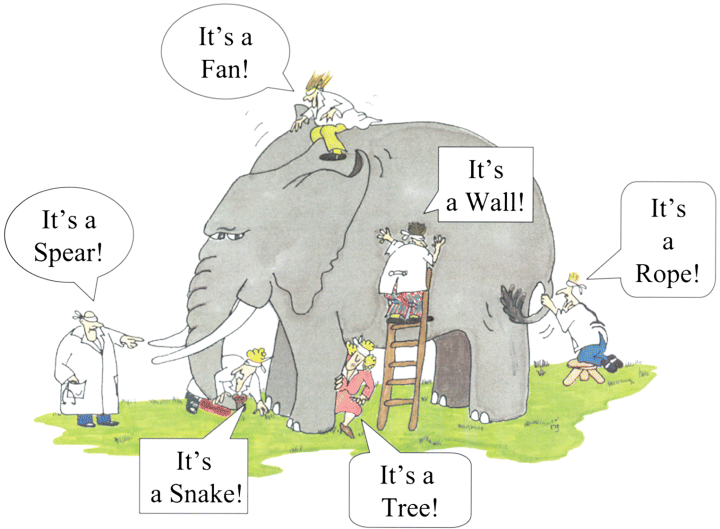
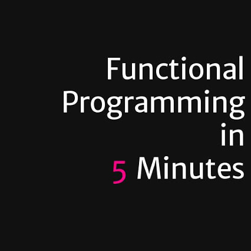

FP
with Java 8
Mateusz Szczap
Email: mszczap@ebay.com
Twitter: @matiwinnetou
mobile.de - eBay Inc. subsidiary
What is it?
"At the heart of functional programming is thinking about your problem domain in terms of immutable values and functions that translate between them."
Advantages
"Functional programming aims to let you more easily write programs that are concise, with fewer bugs and parallelizable."
"Using the Functional style allows code to be written that declares its intent clearly, without being mixed up with control flow statements(...)"
"Because of the principles like side-effect free programming [mutating state], it is much easier to reason about code, and check its correctness."
Why? What for? Opinions..
- WHAT instead of HOW? Declaratively communicates programmer's indent clearly
- more concise code *IF NOT* abused increases code readability
- easier to do parallel programming (immutable data structures, which are thread safe)
- ability to write less error prone code
Sceptic's view
"There is of course nothing that is possible in functional but not imperative programming."
"The point of different programming paradigms isn't to make things possible that weren't possible before, it's to make things easy that were hard before."
http://en.wikipedia.org/wiki/Blind_men_and_an_elephant
Nothing comes for free...
- investment into learning new paradigm (brain IOPs)
- hard to understanding functional jargon (HOF, RT, Side-Effect Free, Monad, Monoid, Functor or Applicative Functor)?
- FP is grounded in Category Theory and lots of people in FP use those academic terms
- community is divided into practical programmers and academics followers of FP
Your Expectations - What I can deliver

"Like OOP learning FP is more like a journey than something you can learn in 1-2 hours."
FP - declarative example
final ImmutableList<Person> persons = ImmutableList.of(
new Person("Patrick", Person.Gender.MALE, 170, 30),
new Person("Stefan", Person.Gender.MALE , 180, 35),
new Person("Julia", Person.Gender.FEMALE, 161, 25)
);
persons.stream()
.filter(p -> p.getGender() == Person.Gender.MALE)
.mapToDouble(p -> p.getHeight())
.average()
.ifPresent(average -> System.out.println(average));
--
175.0
Imperative example
final ImmutableList<Person> persons = ImmutableList.of(
new Person("Patrick", Person.Gender.MALE, 170, 30),
new Person("Stefan", Person.Gender.MALE, 180, 35),
new Person("Julia", Person.Gender.FEMALE, 161, 25)
);
double sum = 0.0D;
for (Person p : persons) {
if (p.gender == Person.MALE) {
sum += p.getHeight();
}
}
double avg = persons.size() == 0 ? 0: sum / persons.size();
System.out.println(avg);
FP is *NOT* new but... unfamiliar, academic and alien?
Scheme
(define (add-three number)
(+ number 3))
(define (add-three-to-each sent)
(every add-three sent))
> (add-three-to-each '(1 9 9 2))
(4 12 12 5)
FP is *NOT* new
Purely functional:
- Haskell
- Lisp/Scheme
OOP mixed with FP
- C#
- F#
- Java 8
- Scala
Java 8 is to C# what Scala is to F#.
FP is Jargon's *Galore
Esoteric nature of FP lies in cryptic language and jargon. Let's demystify some terms.

*galore - (EN -> DE) - in Hülle und Fülle
Jargon's Galore - monomorphic function and polymorphic function
"Monomorphic functions are functions that operate on one type of data only."
"Polymorphic functions are functions that work on any data type."
Monomorphic functions
private static ImmutableList<Person> people() {
final Person p1 = new Person("Jan", Person.Gender.MALE, 172, 80, Optional.of(new Person.Address("Albert-Einstein", 1, 14345)));
final Person p2 = new Person("Kathy", Person.Gender.FEMALE, 160, 16);
return ImmutableList.of(p1, p2);
}
public Optional<Person> findAdult() {
people().stream()
.filter(p -> p.getAge() >= 18)
.findFirst()
}
Polymorphic functions
private static ImmutableList<Person> people() {
final Person p1 = new Person("Jan", Person.Gender.MALE, 172, 80, Optional.of(new Person.Address("Albert-Einstein", 1, 14345)));
final Person p2 = new Person("Kathy", Person.Gender.FEMALE, 160, 16);
return ImmutableList.of(p1, p2);
}
private static <T> Optional<T> findPoly() {
return people().stream()
.filter(isAdult())
.map(e -> (T) e)
.findAny();
}
Jargon's Galore - Higher Order Function (HOF)
"In FP higher order function is a function that either takes a function as a parameter or outputs a function as a return value."
Jargon's Galore - HOF as an input
Function<Double, String> KG_TO_STONES = weight -> String.format("%f stones", weight * 0.157473);
static void printWeight(double weightInKg, Function>Double, String> scale) {
System.out.println("Weight: " + scale.apply(weightInKg));
}
public static void main(String[] args) {
printWeight(6.4D, KG_TO_STONES);
}
--
Weight: 1.007827 stones
1 stone = 6.350 kghttp://en.wikipedia.org/wiki/Stone_%28unit%29
Jargon's Galore - HOF as an output
@FunctionalInterface
public interface Predicate<T> {
boolean test(T t);
}
Predicate<Person> isAdult() {
return p -> p.getAge() >= 18;
}
final ImmutableList<Person> persons = ImmutableList.of(
new Person("Patrick", Person.Gender.MALE, 170, 30),
new Person("Stefan", Person.Gender.MALE , 180, 17),
new Person("Julia", Person.Gender.FEMALE, 161, 25)
);
persons.stream()
.filter(isAdult())
.forEach(p -> System.out.printf("Adult person: %s:\n", p));
---
Adult person: Person{name='Patrick', height=170, gender=MALE, age=30}:
Adult person: Person{name='Julia', height=161, gender=FEMALE, age=25}:
Jargon's Galore - Function Application
@Test
public void testAddOneFunction() {
final Function<Integer, Integer> addOne = i -> i + 1;
Assert.assertEquals(Integer.valueOf(3), addOne.apply(2));
}
@Test
public void testSquareFunction() {
final Function<Integer, Integer> squareFun = i -> i * i;
Assert.assertEquals(Integer.valueOf(4), squareFun.apply(2));
}
Loan Pattern - 1
public class Resource {
public Resource() {
System.out.println("Opening resource");
}
public void operate() {
System.out.println("Operating on resource");
}
public void dispose() {
System.out.println("Disposing resource");
}
}
Loan Pattern - 2
final Resource resource = new Resource();
try {
resource.operate();
} finally {
resource.dispose();
}
Loan Pattern - 3
public static void withResource(Consumer<Resource> consumer) {
Resource resource = new Resource();
try {
consumer.accept(resource);
} finally {
resource.dispose();
}
}
Jargon's Galore - Function Composition - f(g(x))
"In mathematics, function composition is the pointwise application of one function to the result of another to produce a third function."
"The term "composition of functions" (or "composite function") refers to the combining of functions in a manner where the output from one function becomes the input for the next function."
Default Methods - Virtual Extension Methods
"Default methods enable you to add new functionality to the interfaces of your libraries and ensure binary compatibility with code written for older versions of those interfaces."
List<Person> people = people();
people.forEach(p -> System.out.println(p));
Interfaces in Java can now implement methods. The benefit that default methods bring is that now it’s possible to add a new default method to the interface and it doesn’t break the implementations.
Function Composition - compose
java.util.function.Function<T, R>:
default <V> Function<V, R> compose(Function<? super V, ? extends T> before) {
return (V v) -> apply(before.apply(v));
}
@Test
public void testComposed1() {
final Function<Integer, Integer> addOne = i -> i + 1;
final Function<Integer, Integer> square = i -> i * i;
final Function<Integer, Integer> composed = square.compose(addOne);
final List<Integer> ints = Lists.newArrayList(1, 2, 3, 4, 5).stream()
.map(composed)
.collect(Collectors.toList());
Assert.assertEquals(Lists.newArrayList(4, 9, 16, 25, 36), ints);
}
Function Composition - andThen
java.util.function.Function<T, R>:
default <V> Function<T, V> andThen(Function<? super R, ? extends V> after) {
return (T t) -> after.apply(apply(t));
}
@Test
public void testComposed2() {
final Function<Integer, Integer> addOne = i -> i + 1;
final Function<Integer, Integer> square = i -> i * i;
final Function<Integer, Integer> composed = addOne.andThen(square);
final List<Integer> ints = Lists.newArrayList(1, 2, 3, 4, 5).stream()
.map(composed)
.collect(Collectors.toList());
Assert.assertEquals(Lists.newArrayList(4, 9, 16, 25, 36), ints);
}
Jargon's Galore - Side Effect free programming
"In classical FP a side effect is a situation in which there is a mutation to a state. Classical FP programming operates only on immutable data structures, instead of mutating state, FP programs yield a new state based on old state often using recursion."
"Procedure is often used to refer to a chunk of code with side-effects."
Side-Effect - lenient or strict
- PRAGMATICS - lenient - local side effects acceptable
- THEORISTS - strict - no side effects acceptable at all
Side-Effect - lenient example
public ImmutableList<Sys> hitCountSys() {
final ImmutableList.Builder<Sys> builder = ImmutableList.builder();
builder.add(Timer.initial(metricRegistry));
builder.add(new Normalizer());
builder.add(new DefaultsProcessor());
builder.add(new ApiMapper(geo));
builder.add(new HitCountSearch(searchService));
builder.add(new AsyncProcessor(ImmutableList.of()));
builder.add(Timer.checkpoint("ecs.hitCount"));
return builder.build();
}
Side-Effect - strict example
public OptionalDouble malesAverageHeight() {
return people().stream()
.filter(p -> p.getGender() == Person.Gender.MALE)
.mapToDouble(p -> p.getHeight())
.average();
}
Jargon's Galore - Memoization
"In computing, memoization is an optimization technique used primarily to speed up computer programs by storing the results of expensive function calls and returning the cached result when the same inputs occur again."
Memoization
public final class Memoizer<T, U> {
private final Map<T, U> cache = new ConcurrentHashMap<>();
private Memoizer() {}
private Function<T, U> doMemoize(final Function<T, U> function) {
return input -> cache.computeIfAbsent(input, function::apply);
}
public static <T, U> Function<T, U> memoize(final Function<T, > function) {
return new Memoizer<T, U>().doMemoize(function);
}
}
Memoization - example
@Test
public void testMemoization() {
Function<Integer, Integer> square = x -> x * x;
Function<Integer, Integer> memoized = Memoizer.memoize(square);
assertEquals(Integer.valueOf(100), square.apply(10));
assertEquals(Integer.valueOf(100), memoized.apply(10));
assertEquals(Integer.valueOf(100), memoized.apply(10));
}
Jargon's Galore - Memoization - caveats
"There is a kind of function that may pose a problem: recursive functions that call themselves several times with the same argument may not be memoized this way."
Streams - generate
"A continuous flow of data."
@Test
public void testGenerateSequenceOnes() {
final List<Integer> ints = Stream.generate(() -> 1)
.limit(10)
.collect(Collectors.toList());
Assert.assertEquals(Lists.newArrayList(1,1,1,1,1,1,1,1,1,1), ints);
}
Streams - iterate
@Test
public void testGenerateSequenceInc() {
final List<Integer> ints = Stream.iterate(0, i -> i + 1)
.limit(10)
.collect(Collectors.toList());
Assert.assertEquals(Lists.newArrayList(0,1,2,3,4,5,6,7,8,9), ints);
}
Streams - concat
@Test
public void testConcat() {
final Stream<Integer> r1 = Stream.of(1, 2, 3);
final Stream<Integer> r2 = Stream.of(3, 4, 5);
final List<Integer> collect = Stream.concat(r1, r2)
.distinct()
.sorted(Comparator.reverseOrder())
.collect(Collectors.toList());
Assert.assertEquals(ImmutableList.of(5, 4, 3, 2, 1), collect);
}
Jargon's Galore - Currying
Jargon's Galore - Persistent Collections
Jargon's Galore - Folds/Reductions
In spirit of side-effect free programming a lot of traditional computations with loops mutating state can be achieved using "reductions/folds".
Jargon's Galore - Folds/Reductions
private static ImmutableList<Person> people() {
final Person p1 = new Person("Jan", Person.Gender.MALE, 172, 80, Optional.of(new Person.Address("Albert-Einstein", 1, 14345)));
final Person p2 = new Person("Kathy", Person.Gender.FEMALE, 160, 16);
return ImmutableList.of(p1, p2);
}
final Integer totalAge = people().values().stream()
.map(Person::getAge) // p -> p.getAge()
.reduce(0, (age1, age2) -> age1 + age2);
--
96
Jargon's Galore - Monoid
"A monoid is an algebraic structure with a single associative binary operation and an identity element."
Monoid Example - Part 1
public interface Monoid<T> {
T zero(); //identity element
BinaryOperator<T> operation(); //associative binary operation
}
public class StringMonoid implements Monoid<String> {
public static final StringMonoid INSTANCE = new StringMonoid();
public String zero() {
return "";
}
public BinaryOperator<String> operation() {
return (prev, next) -> prev + next;
}
}
Monoid Example - Part 2
private static ImmutableList<Person> people() {
final Person p1 = new Person("Jan", Person.Gender.MALE, 172, 80, Optional.of(new Person.Address("Albert-Einstein", 1, 14345)));
final Person p2 = new Person("Kathy", Person.Gender.FEMALE, 160, 16);
return ImmutableList.of(p1, p2);
}
@Test
public void testStringMonoid() {
final String reduced = people().stream()
.map(p -> p.getName())
.reduce(StringMonoid.INSTANCE.zero(), StringMonoid.INSTANCE.operation());
assertEquals("JanKathy", reduced);
}
Jargon's Galore - Functor (functional objects)
"By analogy to OOP - functor is an object with a function defined, very similar to strategy pattern."
public interface Functor<A,B extends Functor<?,?>> {
B map(Function<A,B> fun);
}
Jargon's Galore - Monad
- Monads are container types
- Monads Support Higher Order Functions
- Monads are Combinable
- Monads Can Be Built In Different Ways
http://james-iry.blogspot.de/2007/09/monads-are-elephants-part-1.html
Monad by example
public interface Monad<A,B extends Monad<?,?>> extends Functor<A,B> {
B flatMap(Function<A,B> fun);
}
Monad by example - Maybe
public class Maybe<A> implements Monad<A,Maybe<?>> {
private final A a;
private Maybe(A a) {
this.a = a;
}
public <B> Maybe<B> map(Function<A,B> fun) {
return a == null ? return nothing() : just(fun.apply(a))
}
public <B> Maybe<B> flatMap(Function<,Maybe<?>> fun) {
if (a == null) return nothing();
else return (Maybe<B>)fun.apply(a);
}
public static <A> Maybe<A> just(A a) {
return new Maybe<A>(a);
}
public static <A> Maybe<A> nothing() {
return new Maybe<>(null);
}
}
Monad - Optional
Monad - known monads
- Java8 - Optional<T>
- Java8 - Stream<T>
- RxJava - Observable<T>
- Play - F.Promise<T>
Functional Operators - Part 1
- zip - brings together two values
- concat - brings together two values, usually one after another, good example: RxJava - Observable
- map - transforms one value into another (one type to another)
- flatMap - transforms one value into another and flattens it, e.g. avoids Optional<Optional<T>>
- foldLeft - folds starting from the left
- foldRight - folds starting from the right
- reduceLeft - reduces from left
- reduceRight - reduces from right
"Fold takes an explicit initial value for the accumulator while reduce uses the first element of the input list as the initial accumulator value."
Functional Operators - Part 2
- sequence
- findAny
- findFirst
- forEach
- min
- max
- forAll
- exists
- dropWhile
- takeWhile
- distinct
- limit
What is Java 8 missing
- ADT - Algebraic Data Types
- Pattern Matching
- (lifting) - lifting method to function
- Tail recursion
- value types - case classes
- standard functional methods like zip, takeWhile, etc, try [JOOL] - https://github.com/jOOQ/jOOL
- limited monads in standard library
Wrap up